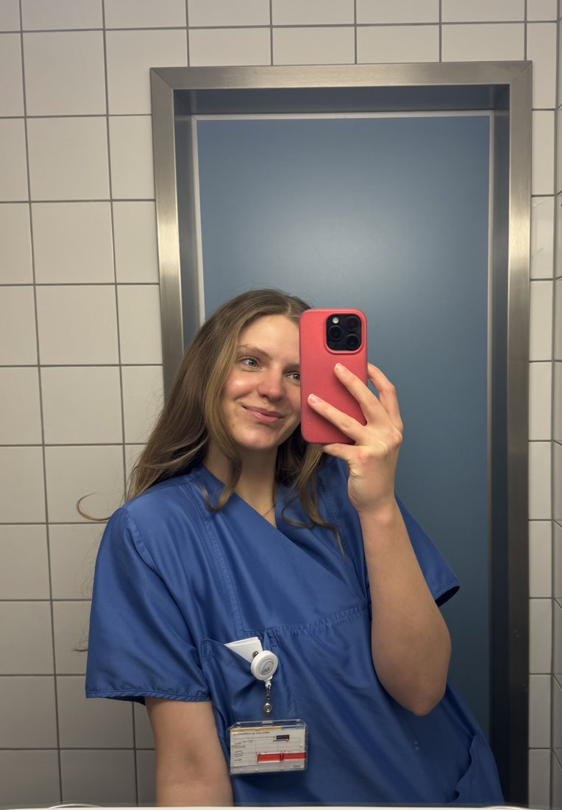
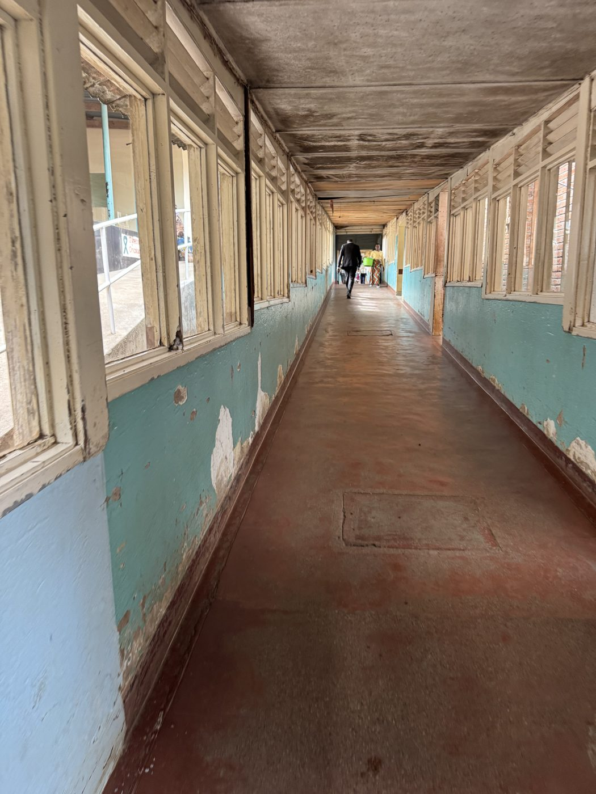
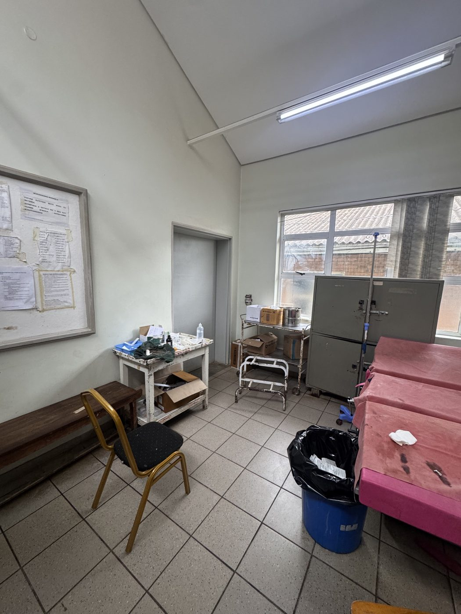
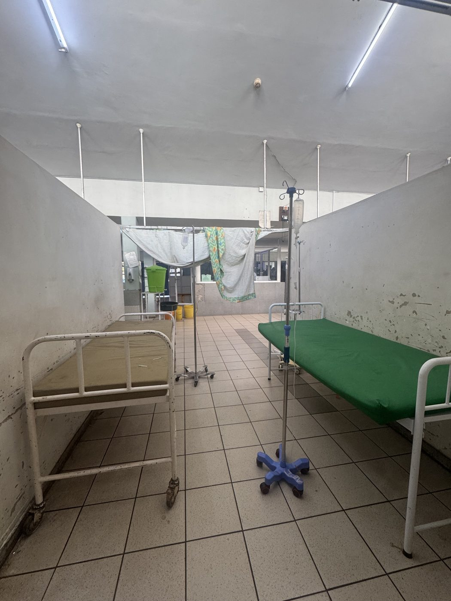
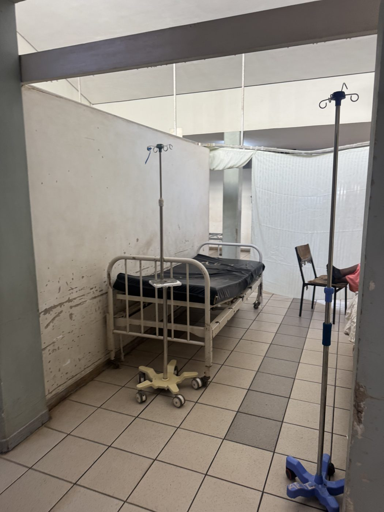

Malawi is one of the poorest countries in the world. For countless people this public hospital is the only chance of medical care. Everyone here is treated, even those who cannot pay – yet almost everything is missing.
Hi, I'm Christine. I'm doing part of my final clinical year in Malawi. It takes only a short time to notice the drastic lack of resources at the hospital, and especially in the emergency department.
The emergency department of the Queen Elizabeth is flooded with patients every day, most of them from very, very poor backgrounds and many seriously ill. Because the team here still does its very best with every means available, I would like to support them beyond my own work.
I've sat down with the senior consultants and would like to buy some new equipment and medication. So far, patient monitors (currently there is one for around 15 critically ill patients), blood glucose meters and medication are being discussed. Exactly what gets bought depends on the total amount donated and on what the team on the ground considers most important – I'd like to leave that decision to the specialists.
For all of this to work, that's where you come in. Every donation, every share of this page helps. So top up your daily, monthly or yearly karma and show what human solidarity can achieve.
Thank you from the bottom of my heart.

A few pictures from the Queen Elizabeth Central Hospital – you'll find the full gallery on the Impressions page.




A young country in south-east Africa – its history, people and culture, and why good care matters so much here.
Learn more → The placeThe largest public hospital in southern Malawi – and what its emergency department does.
Learn more → LatestHow the donations are developing and what has been purchased on the ground.
Learn more →Thank you for supporting this project. Together we can make sure the people in the emergency department get the care that decides between life and death.